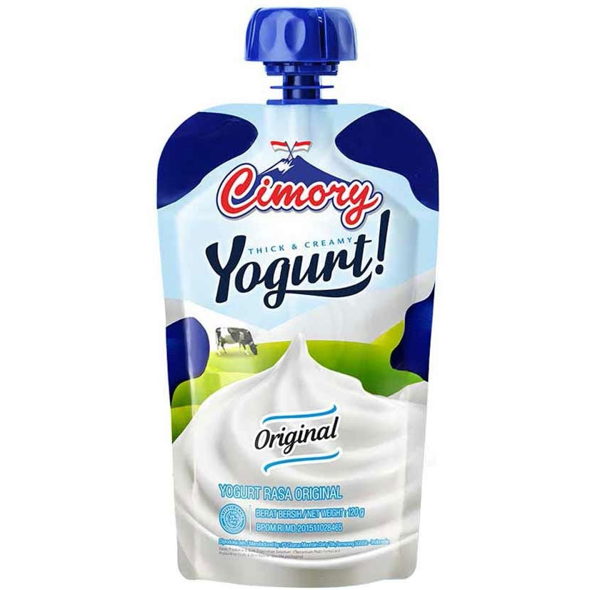
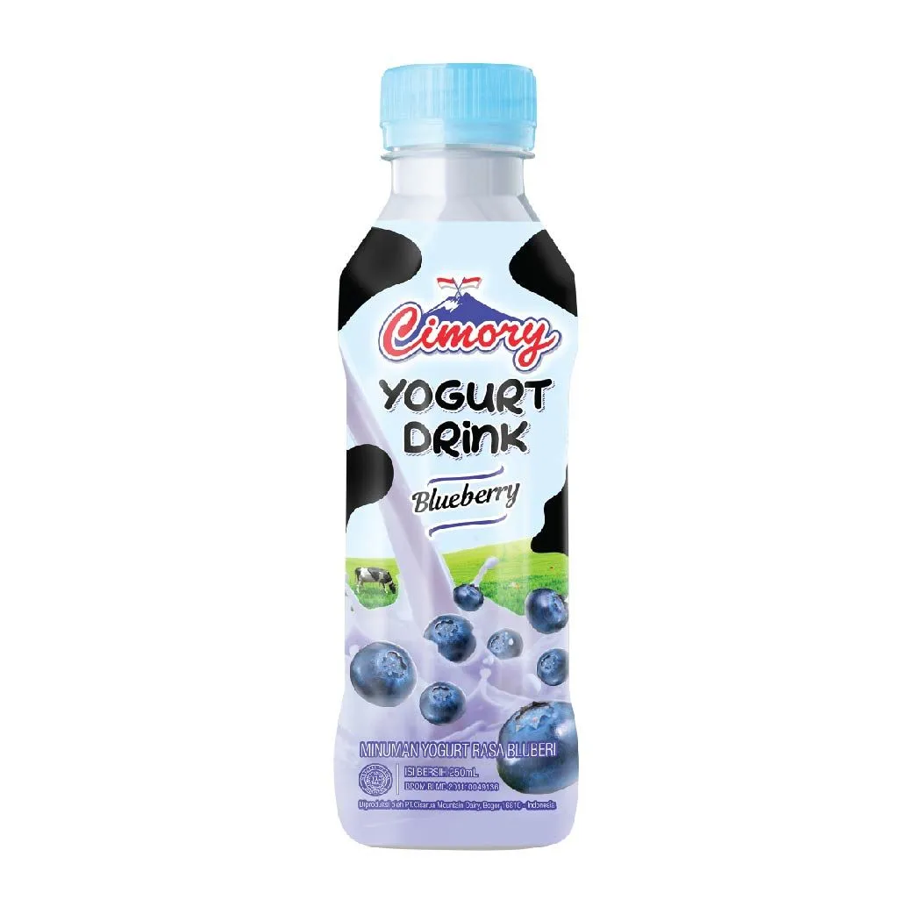
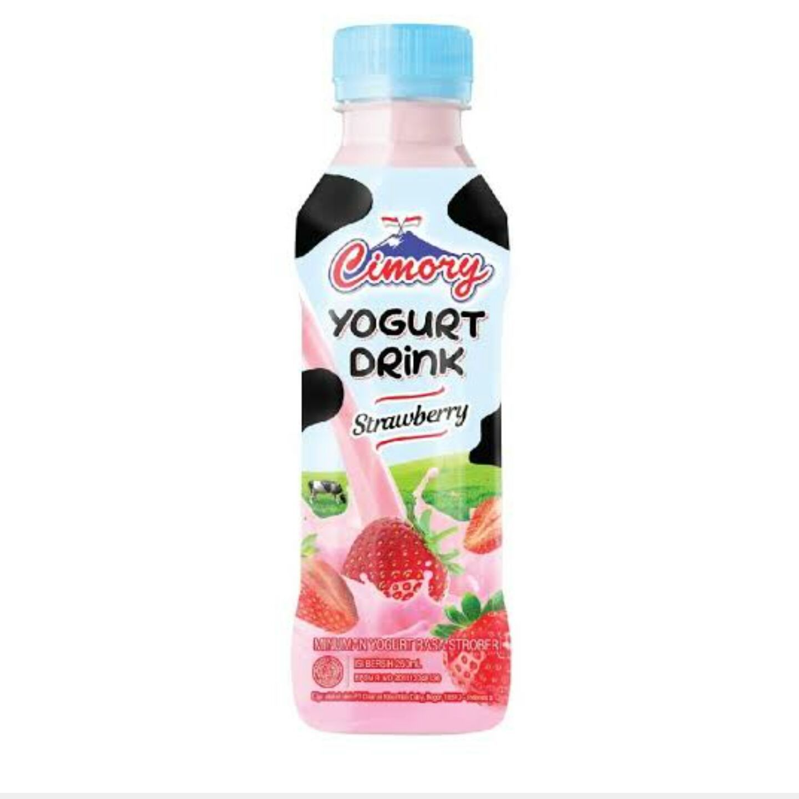
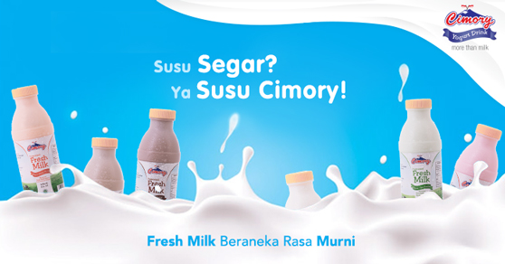
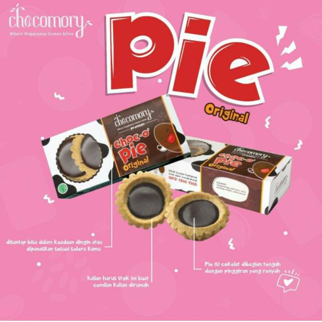
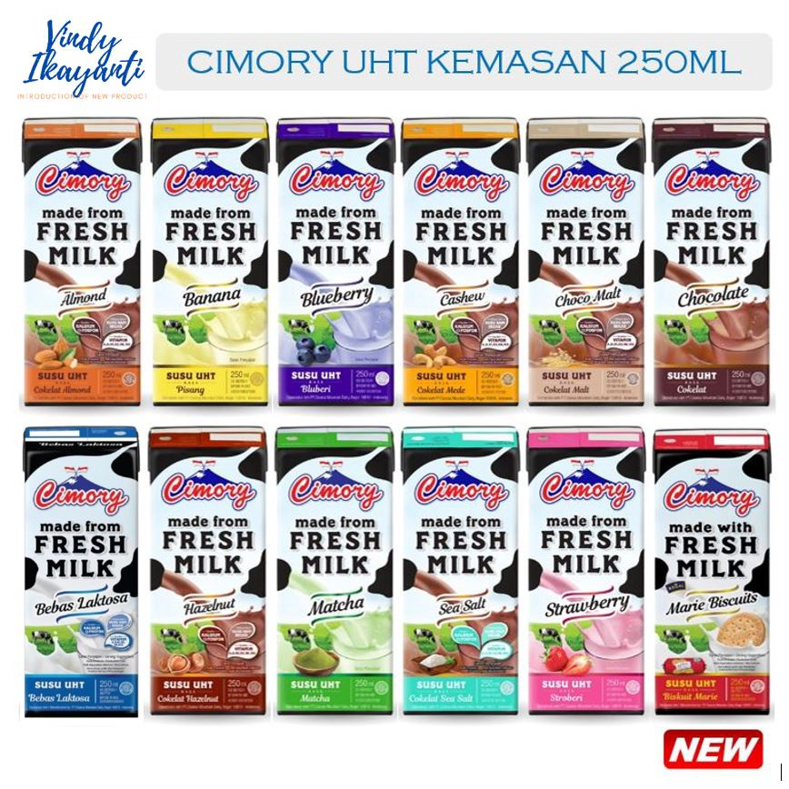
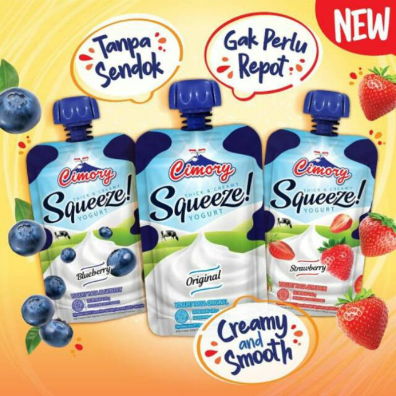
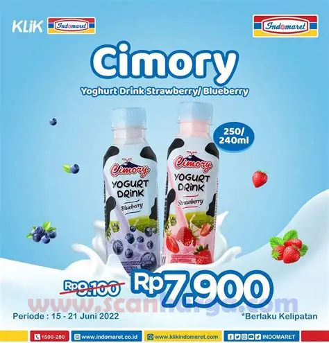
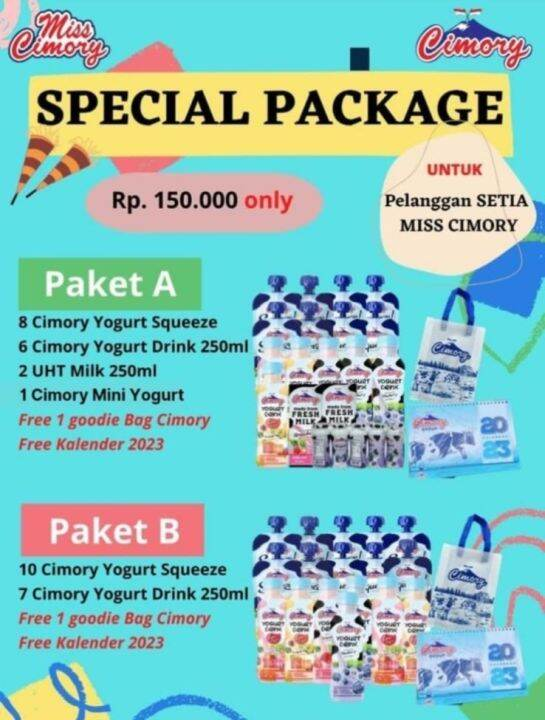

Shop our product
Produk
Susu chimory
terbuat dari susu murni pilihan yang dibuat dengan menggunakan alat modern
THE YOGURT
THE YOGURT

THE YOGURT
Chimory yogurt is made from premium fresh milk

THE YOGURT
Produk olahan susu fermentasi dari PT Chimory

THE YOGURT
Chimory yogurt mengandung bakteri baik,protein,kalsium,dan serat

THE YOGURT
produk ini memiliki berbagai varian seperti yogurt stick,dengan berbagai rasa buah
Tentang chimory
Susu chimory
terbuat dari susu murni pilihan yang dibuat dengan menggunakan alat modern




Chimory Give Voucher
Beli voucher potongan harga untuk diri kamu sendiri, atau kirim sebagai hadiah!

